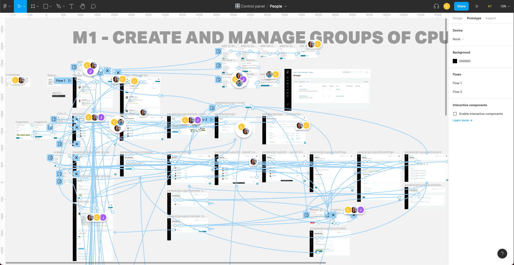
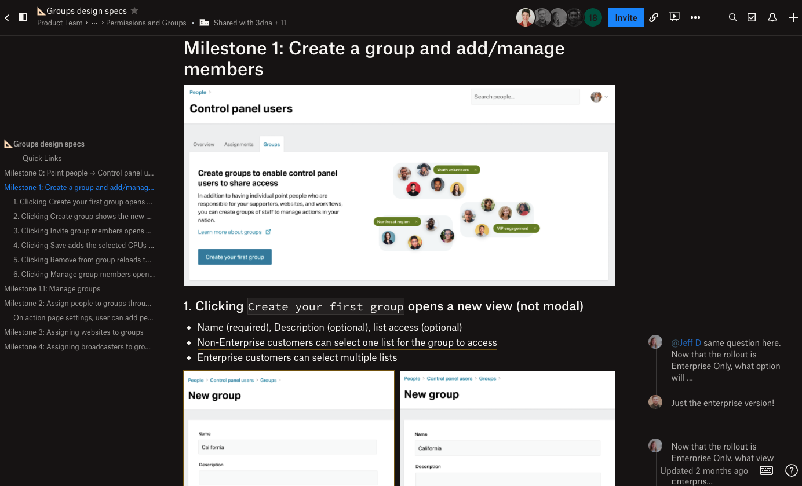

NationBuilder Groups Feature, 2021
Skills
- Qualitative research
- UX design
- UI design
Tools
- Dropbox Paper
- Figma
- FullStory
Artifacts
- Customer interview results
- Clickable prototype
- Detailed design specs
Problem
Enterprise customers were frustrated with how our CRM limited assigning supporters to a sole “point person”, instead of a group of staffers. This led to workarounds where staffers would share passwords, or otherwise compromise information security. We considered changing our roles and permissions system to address this issue, but sought other solutions due to engineering complexity. Ultimately, we decided to expand the scope of our product to include the concept of “groups” of users who could share responsibility for supporter outreach, as well as website maintenance and other duties.
Solution
I partnered with our product manager to conduct customer interviews, selecting a range of customers who our data showed had used other common workarounds for our system’s limitation. We learned what the baseline feature set would need to include in order for this feature to be successful, as well as additional context that helped us refine user-facing copy.

Working closely with product and engineering management, I helped define milestones that would allow us to iterate quickly to deliver useful improvements within our sprint cadence. I also created clickable prototypes in Figma to validate proposed workflows with stakeholders, internal resources, and customers.
Once mockups were nearing completion, I began building design specs in Dropbox Paper. These were broken out by milestone, and included edge cases, mockups, and links to existing patterns in our design system, and were cited by our engineers as “:chefs_kiss:”

Result
Because I instrumented FullStory user tracking for group creation and management on our production site, we’ve been able to track the steady growth of this feature among enterprise customers. We’re also able to observe user sessions, helping us find opportunities to improve user affordances, clarify UI copy, and create targeted help documentation.